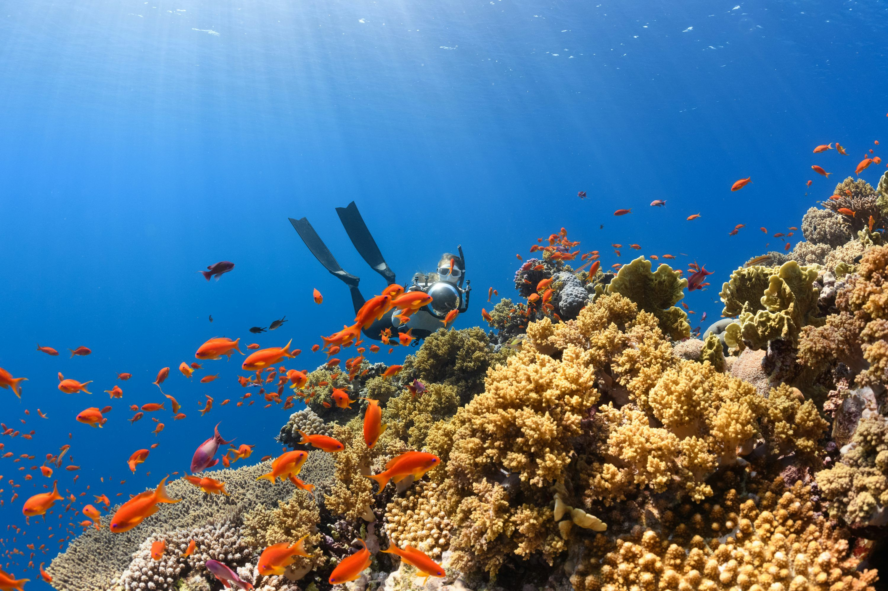

Explore the largest coral reef system in Sri Lanka, a sanctuary for incredible marine life and giant green turtles.
The Hikkaduwa Coral Sanctuary, part of the Hikkaduwa National Park, is one of Sri Lanka's marine national parks. It protects a large fringing coral reef with an average depth of around 5 meters, making it ideal for snorkeling and diving. Originally notified as a nature reserve in 1988, it became a national park in 2002.
Visitors can discover a rich diversity of marine life, including 60 species of coral and over 170 species of reef fish. The highlight for many is the presence of several large Green Sea Turtles that are habituated to humans and often swim right up to the shore, allowing for close encounters in their natural environment.
Back to Hikkaduwa Hub